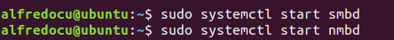
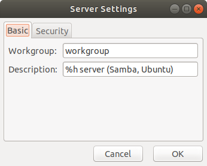

Samba
System-config-samba es una GUI para administrar usuarios y recursos compartidos de samba. Antes de usar system-config-samba, instalemos el conjunto de servidores Samba desde el repositorio de Ubuntu ejecutando el siguiente comando en la terminal.
Verificamos la versión.
Salida de muestra.
Para verificar si el servicio Samba se está ejecutando, emita los siguientes comandos.
Para iniciar estos dos servicios, emita los siguientes comandos

Una vez iniciado, smbd escuchará en el puerto TCP 139 y 445. nmbd escuchará en el puerto UDP 137 y 138.
Ejecute el siguiente comando para instalarlo.

Entonces podemos comenzarlo desde la línea de comandos.
Si obtiene el siguiente error: could not open configuration file `/etc/libuser.conf': No such file or directory.
Puede solucionarlo creando un /etc/libuser.conf archivo vacío con el siguiente comando.
Luego, vuelva a ejecutar el comando de inicio. Aquí está la interfaz predeterminada.
Se abrirá la interfaz de Samba Server Configuration.
Primero, creemos un usuario de Samba. Ahora podemos abrir una nueva ventana de terminal (porque system-config-samba está usando la ventana de terminal actual) y crear un usuario de Linux con el siguiente comando. Reemplace username con su nombre de usuario preferido.
A continuación, también debemos establecer una contraseña Samba separada para el usuario.
Ahora en la GUI de Samba, haga clic en Preferences > Server Settingsmenú. Asegúrese de que el valor de workgroupsea el mismo con la configuración del grupo de trabajo de las computadoras con Windows.

Luego haga clic en el botón más para crear un recurso compartido Samba. En la pestaña Básico , especifique:
En la pestaña Acceso, seleccione el usuario de Samba que acaba de crear y haga clic en Aceptar. Si no se muestra el usuario de Samba, reinicie system-config-samba . Si selecciona Permitir acceso a todos , entonces otros en la misma red pueden acceder a la carpeta compartida sin ingresar un nombre de usuario y contraseña.
Redes.
Si desea permitir que el usuario tenga permiso de escritura en la carpeta compartida, ejecute el siguiente comando para otorgar permiso de lectura, escritura y ejecución.
Ahora todo lo que queda por hacer es reiniciar el servidor Samba.
Creamos directorios y archivos.
Acceso a la carpeta compartida de Samba desde Windows.
Abrimos la ventana de equipo y le damos clic en Red.
Si se genera el siguiente error entonces.
Este error se debe a que las redes no son visibles y conexiones a otros dispositivos que se encuentre en la red no les permite conectarse.
Abrimos el Centro de redes y recursos compartidos. Damos clic en Cambiar configuración de uso compartido avanzado.
En el apartado de Invitado de redes, activamos las dos opciones para permitir la detección de redes y activar el uso compartido de archivos e impresoras.
Guardamos los cambios.
En una computadora con Windows que esté en la misma red, abra el Equipo nuevamente y haga clic Red el panel izquierdo. Luego haga doble clic en el nombre de host de su computadora Ubuntu. Por ejemplo, el nombre de host de mi computadora Ubuntu 18.04 LTS es UBUNTU.
Dentro esta la carpeta UBUNTU y dentro de esta la carpeta de Alfredo con los archivos agregados, pero primero nos autentificamos.
Después de autentificarnos accedemos a la carpeta Alfredo y veremos los siguientes archivos, los cuales tenemos ciertos permisos que fueron asignados en la configuración de Samba en Ubuntu.
Archivos de Alfredo.
Ahora vamos a crear una carpeta desde Windows y le vamos a agregar otros archivos.
Archivos Miguel.
Ahora comprobamos en UBUNTU la nueva carpeta con sus archivos.
Archivos.